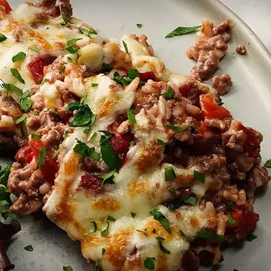

Cazuela de arroz con hamburguesa y queso

Ingredientes
Una cazuela de arroz con forma de hamburguesa con cinco ingredientes y
cubierta con queso derretido. Mi abuela solía prepararla y siempre
era un éxito. Ella usa queso americano, pero yo la preparo con mozzarella.
¡Muy fácil y deliciosa!
- 1 libra de carne molida
- 1 lata (10,75 onzas) de crema de champiñones
- 1 lata (14,5 onzas) de tomates cortados en cubitos con jugo
- ½ taza de arroz blanco de grano largo
- ¾ taza de queso mozzarella rallado
- sal y pimienta para probar
Direcciones
- Paso 1
Desmenuza la carne molida en una sartén a
fuego medio-alto. Cocínala y revuelve hasta que se dore de manera
uniforme. Escurre la grasa y agrega la crema de champiñones, los tomates
y el arroz crudo. Tapa y cocina a fuego lento, revolviendo de vez en
cuando, hasta que el arroz esté cocido, aproximadamente 15 minutos.
- Paso 2
Precaliente el asador del horno. Cuando el
arroz esté listo, pase el contenido de la sartén a una cazuela. Cubra con
una capa de queso.
- Paso 3
Asar hasta que el queso se derrita y quede
tostado. Sazonar con sal y pimienta a gusto, ¡y disfrutar!
Volver al inicio